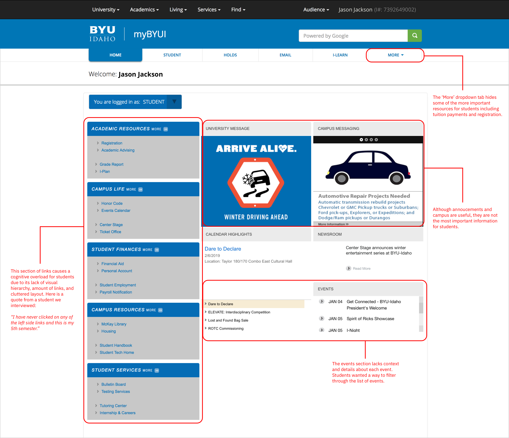
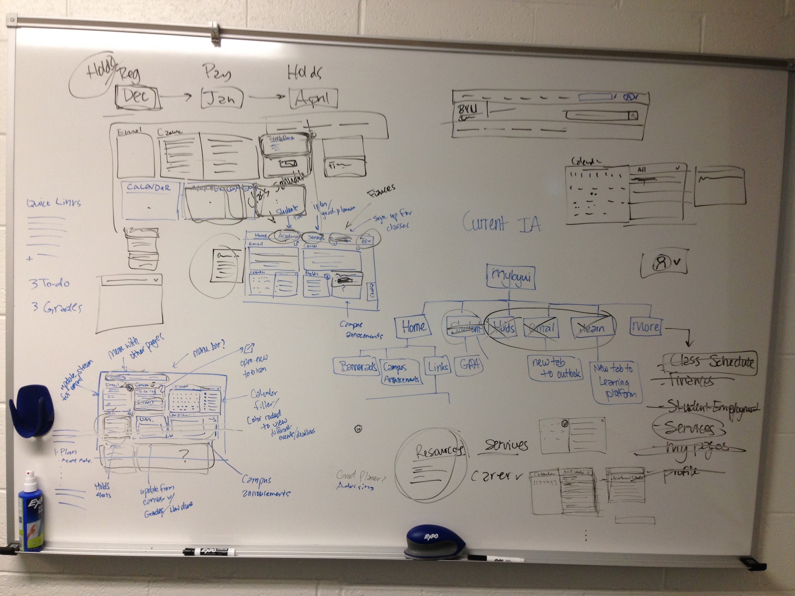
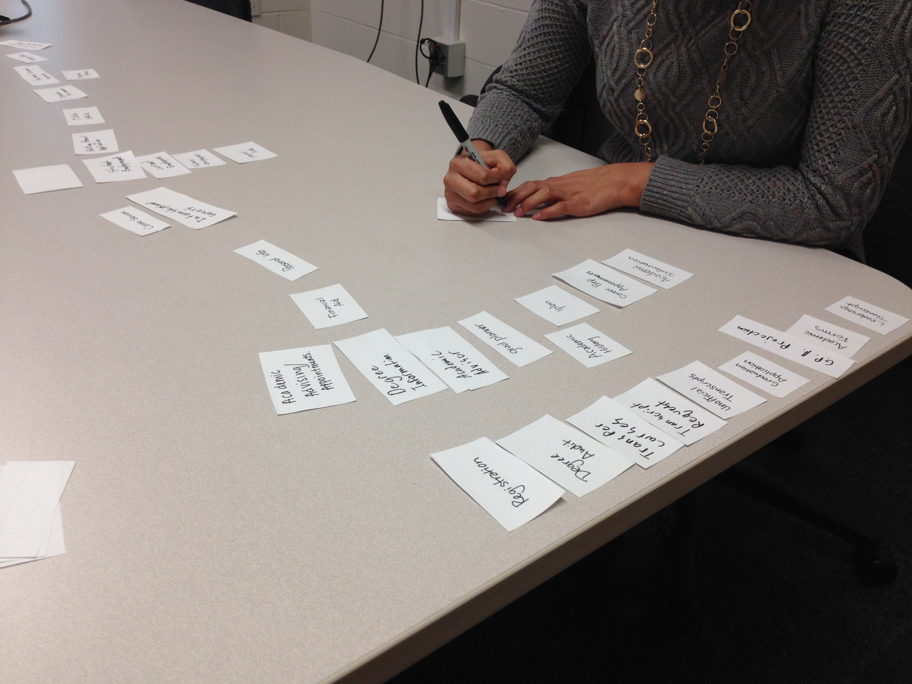

Back to Projects
MyBYUI is the homepage portal for BYU-Idaho students. The student portal's purpose is to present the most relevant information to students allowing them to navigate the university site and find the resources they need.
The MyBYUI portal lacks relevant information and resources for students. As a result, students have difficulty navigating throughout the site, accessing services, completing necessary tasks.
As a student that constantly uses this portal, I had many assumptions and ideas behind what the new redesign could look like. It was tempting to start jumping into ideas of what this portal could look like, but I wanted to test my assumptions. Our team needed to establish goals. Before interviewing students, we wrote down research goals and questions we wanted answered. This allowed us to form a consensus around what we wanted to learn.
To test some of the assumptions we had as a team, we wanted some strong data around what students are using on the current portal. We met with the analytics team hoping to get some data around what students use most on the portal page.
Turns out the analytics team had not been tracking the portal page. As a result, we decided to print out the portal page and asked students about the last two times they used the page (during the user interviews). We had each student point out what they clicked on and why.
To understand how students use the current MyBYUI portal, the UX researcher and I conducted guerilla user interviews with 22 students. During the interviews, I asked questions like "Tell me about your experience using the MyBYUI portal", "What are important tasks you perform on MyBYUI?", "If MyBYUI could streamline any information to you, what would that information be?", and "What are needs you have as a student that MyBYUI is not fulfilling?"
Here are some key insights we found:
In past projects our team didn't do a good job defining what success looks like. During the time of this project I had been working with a design mentor that encouraged me to start thinking about defining success/impact when working on a project. I used IDEO's "The Field Guide To Human-Centered Design," to help our team define success. I posed a few questions to the team like "Does our challenge drive towards impact?", "What does success look like in terms of how were affecting students?" and "What is long term vs short term success?"
After collecting insights from the user interviews, our team created two personas. The first persona is focused on a upper-class student who needs to save time and be aware of important deadlines. The second persona is focused on a freshman student who is looking for rescources that the campus provides.
During the user interviews, a few of the students showed us direct pain points they were facing with the current UI layout. Each pain point is labeled in red:
Our next step was attempting to incorporate all the learnings we had gained into a user interface that would allow students to accomplish their goals. We sketched out multiple layouts on a whiteboard. During this time, we kept in mind the following: students, their goals and success/impact goals.
After exploring ideas, we created a higher-fidelity of the wireframes with further detail. To gather early feedback we printed out the wireframe and showed it 6 students on campus. As the students gave us feedback on the new design, we took notes on the print out.
During the interviews with students, we realized that the current menu had an overload of tabs and many tabs had confusion labeling. To get a better look at the current IA structure, we charted each tab and sub tab on a whiteboard.
To better understand the mental model of students, we decided to conduct an open card sort with 8 students. We took all the sub tabs and wrote them down on paper cards. To start the card sort, I had students group the sub tabs into as many groups as they wanted. After that, I asked them how they would group the tabs in only three groups. During this part of the card sort I asked questions like "How do these words go together?" or "Why would this word not be matched with these?"
The open card help generates ideas for the menu tabs. The three most common words were: Academics, Finances, Resources. We took these category tab words and added them to the cards so that we could conduct a closed card sort. Our team conducted 4 closed card sorts with students. During this round of card sorts, I asked students "What's missing that you need as a student?", "If this were the new menu, what else would you be looking for?" Overall, this last card sort helped us solidify structure of the new menu tabs.
I only had the chance to work on this project for a week or so before leaving to another internship. I was glad to learn that the concepts and designs were well recieved by the stakeholders and the redesign is in the process of being implemented now. During the week or so working on this project, I learned how to work quickly and facilitate discussion within a team.
Next Case Study
{kind=link}
{kind=link}
{kind=link}
{kind=link}
{kind=link}
{kind=link}
{kind=link}
{kind=link}
{kind=link}
{kind=link}
{kind=link}
{kind=link}
{kind=link}